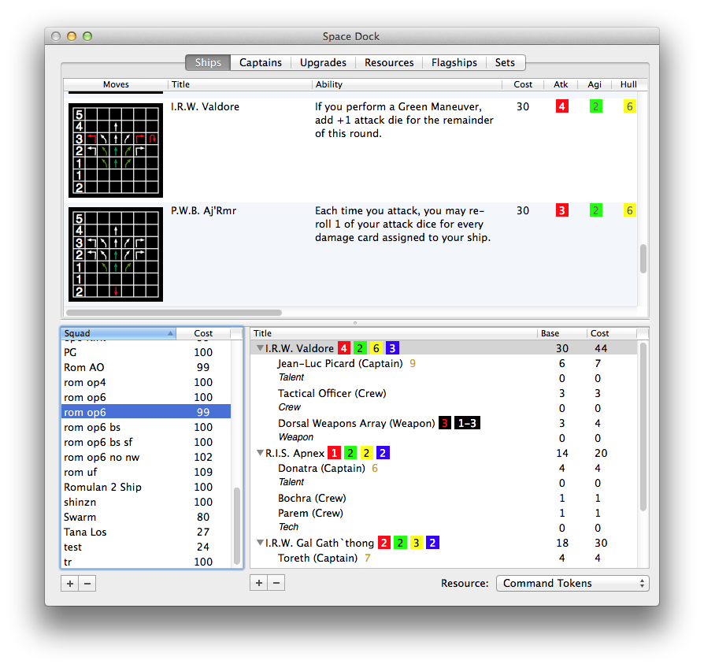

Space Dock is a Macintosh and iOS application for putting together squadrons for WizK!d's excellent Star Trek: Attack Wing game.
Space Dock is very early software. While it is useful in its current form it is not very well tested. Make sure to export your most valuable squad designs for safe keeping.
Space Dock Mac requires a Mac running OS X 10.8 or later due to a dependency on application development features available in that version or later.
Space Dock iOS requires iOS version 6 or later.
Questions about Space Dock? Comment? Email me at rob@tsuk.com.
Questions about Star Trek: Attack Wing? Read the FAQ thread limited to answers by the designer or the full FAQ thread both on Board Game Geek.
